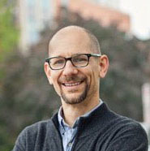
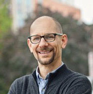

PAULINA ALBERTO
Paulina L. Alberto is Associate Professor in the Departments of History and of RLL. Her current research on the (in)famous porteño street character Raúl Grigera (“el negro Raúl”) and explores the power of racial stories to construct “whiteness” and “blackness” in twentieth-century Argentina and to shape individual fates. For the Argentine Afrikaners Collaboratory project, she's serving as a historical consultant on issues of race and national identity in twentieth-century Argentina.
Andries Coetzee
Andries Coetzee is a linguistics professor at the University of Michigan, specializing in phonetics, phonology, and language variation. He is a native speaker of Afrikaans, and therefore contributes to the Afrikaans components of this project. He also brings cultural and historical knowledge about South Africa to the collaboration.
www.umich.edu/~coetzee
Lorenzo García-Amaya
Lorenzo García-Amaya is Assistant Professor in RLL. His research focuses on the development of fluency and cognitive abilities by second language learners and how cognitive processing abilities affect second language speech development. For the Argentine Afrikaners Collaboratory project, Lorenzo spearheads the in-depth fluency analysis of the Spanish-Afrikaans bilingual speech community.
Nicholas Henriksen
Nick Henriksen is Assistant Professor in RLL and Linguistics. As the Principal Investigator of the Argentine Afrikaners Collaboratory project, Nick oversees all research and mentoring activities, and also establishes the guidelines for the collaborative workflow. His research focuses on phonetics, phonology, and language variation across varieties of Spanish. For the Argentine Afrikaners Collaboratory project, he analyzes the hybrid nature of the bilinguals' phonological systems.
http://www-personal.umich.edu/~nhenriks/
Kate Jenckes
Kate Jenckes is Professor of Spanish in the Department of Romance Languages and Literatures at UM. She has authored two books on Chilean and Argentine literature and culture. For the Argentine Afrikaners Collaboratory project, Kate is serving as a historical and cultural consultant on issues of national identity in twentieth-century Argentina.
Ryan Szpiech
Ryan Szpiech is an Associate Professor in Romance Languages at the University of Michigan. He studies religious hybridity, translation, and cultural contact in the Hispanic world. In this project, he is analyzing the references to religious, cultural, and linguistic identity in the South African Argentine community.
Dominique Bouavichith
Dom is a Linguistics graduate student who studies phonetics and language variation. Within the scope of the Collaboratory, Dom has been working on lenition in Spanish-Afrikaans bilingual speakers. He has also helped in coordinating the various acoustics projects underway and is working on data extraction and analysis for the three vowel projects.
Ian Cook
Ian is a rising senior in LSA’s Residential College, and is completing majors in Spanish and Cognitive Science. He is working with Professor García-Amaya on the acquisition of a second language Spanish, making use of his knowledge of both Spanish linguistics and cognitive psychology. In this project, Ian collaborates on the linguistics and sociocultural projects as an editorial assistant.
Ella Deaton
Ella is a recent graduate of the University of Michigan, planning on pursuing graduate studies in linguistics. Ella is specifically interested in Spanish phonetic research. Ella's role in the Argentine Afrikaners project is in analyzing the front vowels /ɛ e/ of bilingual speakers.
Liliana DeLeon
Liliana is a recent graduate, and next fall will be attending Indiana University to obtain her master's degree in Speech-Language Pathology. Literacy development is a strong interest of hers and she would like to conduct further research on The Word Gap. Her focus on the Argentine Afrikaner Collaboratory project is analyzing the front vowel /ɛ e/ in monolingual and bilingual speakers.
Mallory Fuller
Mallory is a recent graduate of the university with degrees in Linguistics and Spanish. Mallory is excited to be involved in this Collaboratory with her linguistics professors and classmates. She is working on the acoustic analysis of back vowel production /a o c/ in the monolingual speakers. In the future she plans to pursue a graduate program in either Speech Language Pathology or Clinical Mental Health Counseling.
Libby Garno
Libby is a recent graduate of the University of Michigan and currently works as the Lab Manager for the UMich Speech Production Lab. In the Collaboratory she coordinates the Spanish fluency analysis for both monolingual and bilingual speakers. She also conducts phonetic analysis on /kə/ contexts for the Afrikaans speakers.
Claire Laing
Claire just graduated (April 2017) with a bachelor of arts in Spanish and linguistics. She is working with the humanities collaboratory this summer, specifically, on the acoustic analysis of the back vowels /a a: ɔ/ (in Afrikaans) and /a o/ (in Spanish) for the bilingual speakers.
Sean Lang
Sean is an undergraduate student entering his third year at the University of Michigan. In the lab, he works primarily on the linguistic side of the project, on fluency analysis – marking filled and silent pauses while transcribing speech. In addition to working in the lab, Sean works in a neuroscience lab, writes for The Michigan Daily, plays for Magnum Ultimate (Michigan men's club ultimate frisbee team), and is Vice President of his professional fraternity, Phi Sigma Pi.
Moiz Mahmood
Moiz is a rising sophomore in LSA, majoring in Linguistics and Computer Science. For this project, he is analyzing fluency data, working collaboratively with Libby, Sean, and Lorenzo.
Joshua Shapero
Joshua is a recent PhD in Linguistic Anthropology at the University of Michigan. His work draws on mixed methods, combining ethnographic, grammatical, and experimental research among Ancash Quechua speakers in the central Peruvian Andes to study mechanisms of interconnection among language, environmental practice, and cognition. In this project he is working with Professor Szpiech to understand discourses of race, language, history, and religion among South African Argentinians.
Ishan Vashishta
Ishan is a rising Junior studying computer science. He is using his web development skills to construct a website for the project.


 
